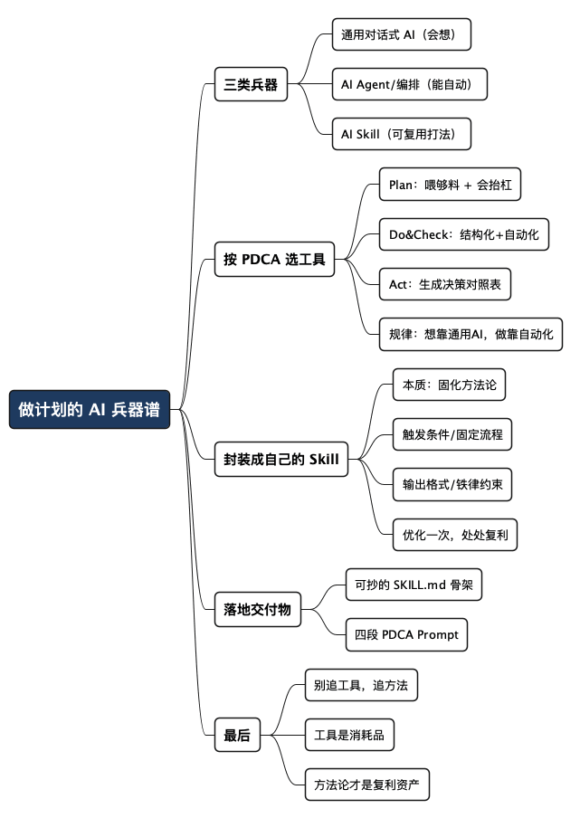

用 AI 做好计划之二：趁手的工具与 Skill
Posted on 四 06 8月 2026 in AI
| Abstract | 用 AI 做好计划之二：趁手的工具与 Skill |
|---|---|
| Authors | Walter Fan |
| Category | learning note |
| Version | v1.0 |
| Updated | 2026-08-06 |
| License | CC-BY-NC-ND 4.0 |
用 AI 做好计划之二：趁手的工具与 Skill
上一篇《用 AI 做好计划之一：把 PDCA 环转起来》讲的是心法——人主导、AI 助攻，怎么把 Plan-Do-Check-Act 这个环转起来。写完有朋友问我：道理我懂了，可具体用什么家伙？
好问题。心法讲多了容易变成鸡汤，今天咱们上兵器谱。
先把话说在前头：做计划这事，没有一件“银弹”工具。 市面上打着“AI 计划助手”旗号的产品一抓一大把，但你真上手就会发现，它们大多在“生成一份好看的计划”这一步很唰，到了“跟着计划跑三个月、天天纠偏”这一步就哑火了。原因不复杂——生成是一次性的，维护是持续的，而持续维护恰恰是计划的命门。
所以这篇不吹某个神器，而是按 PDCA 的四个环节，讲清楚每一环该用什么类型的工具，怎么选，以及一个我更推荐的路子：把 PDCA 封装成你自己的 AI Skill。 文末附一份可以直接抄的模板。
先说清楚三个概念，免得后面绕：
- 通用对话式 AI：ChatGPT、Claude、Gemini 这类。灵活、能推理、能读你的文档，但你说完它就忘，得你反复喂上下文。
- AI Agent / 编排工具：能调工具、有记忆、能多步自治的那种（Claude 的 Agent、各类 workflow 平台）。适合把重复动作自动化。
- AI Skill：把一段固定的工作流程 + 提示词 + 脚本，打包成一个可复用、可触发的“技能”。你不用每次重新解释一遍，喊一声就跑。这是我今天要重点安利的东西。
按 PDCA 分环节，各用什么兵器
先给一张总表，忙的读者扫一眼就够了；后面再挑几个关键的展开。
| PDCA 环节 | 你要 AI 干的活 | 趁手的工具类型 | 选型要点 |
|---|---|---|---|
| Plan 计划 | 拆任务、找风险、校准工期 | 通用对话式 AI（Claude/GPT） | 能读长文档、推理强、支持多轮追问 |
| Do 执行 | 汇总人填的进展、转任务、发提醒 | 结构化笔记 + Agent/自动化 | 数据能结构化、能对接你的日历/工单 |
| Check 检查 | 检测延期、预警依赖、出报表 | 能读结构化数据的 AI + 脚本 | 数据源真实、能定时跑、结果可核对 |
| Act 处置 | 摆选项、算影响、同步变更 | 通用对话式 AI + 模板化 Skill | 能生成决策对照表、能一键更新文档 |
看出规律没有？Plan 和 Act 靠“会想”的通用 AI，Do 和 Check 靠“不嫌烦”的自动化。 前者要判断力，后者要执行力——别指望一个工具全包。
下面挑三个我踩过坑、也尝到甜头的点，具体说说。
Plan：别用“计划生成器”，先喂够料，再让它抬杠
我试过好几个号称一键生成项目计划的产品，结论是：它们生成的计划太顺了，顺到没用。 一个真实项目的价值恰恰在那些不顺的地方——风险、依赖、意外。
但换到通用对话式 AI，也不等于万事大吉。做计划这一步，AI 的产出质量九成取决于你喂了什么料——光丢一句“帮我做个计划”，它只能给你一份正确但通用的废话。所以动手之前，先把四样东西凑齐，一股脑喂给它：
- 一份计划模板：任务、负责人、时间、进度、风险，用表格还是清单，里程碑怎么排——模板是你定的，AI 照着填，出来的才是你的形状，而不是它默认的形状。
- 足够的资料：背景文档、上一版计划、相关数据、约束条件、历史复盘，能喂多少喂多少。它知道的上下文越多，计划就越贴你的实际情况。
- 你想达到的目标：一句话说清要什么、什么最优先、死线在哪。
- 你的想法和担忧：这一步最容易被忽略，也最值钱。心里那点犹豫、直觉里的不安、吃过亏的环节，都摆出来——“我担心压测环境审批会卡”，它就会去帮你验证、给对策，而不是顺着你的乐观往下写。
料喂足了，剩下的交给“会抬杠的对话 AI”：选那个能读你整份文档、能陪你聊十个回合还不掉线的——上一篇讲的事前验尸，也只有这种能多轮追问的工具才玩得转。
举个冲刺规划会的场景。你作为 Scrum Master，会前把“支付对账功能”的资料包整理好：需求文档、上季度的复盘、你拍板的目标（两周上线、准确率优先），连那句“我担心对账精度在月底大促时撑不住”也写上，再附一份你们惯用的计划模板，一起丢给 AI。它十分钟给你一张按模板填好的作战图——你带着它进规划会，团队估点、排依赖就有得聊了，而不是从零开始七嘴八舌。AI 不是替你拍计划，是替你把会前那点没人愿意做的功课做掉。
Do & Check：结构化是一切自动化的前提
这一步的兵器选择，取决于你的数据长什么样。
我见过太多人的计划是一张微信里的截图，或者一段大白话。这种计划，AI 帮不上忙——它没法读、没法更新、没法对着它算延期。想让 AI 当项目助理，第一步是把计划变成机器能读的结构化数据：Markdown 表格、YAML、或者干脆用支持 API 的看板工具（Notion、飞书多维表格、Jira 这类）。
数据结构化之后，选型看两点：
- 能不能接上你的真实数据源。 进度别靠人手填、更别靠 AI 猜。能对接 CI、监控、工单最好，退而求其次也得是人如实更新。
- 能不能定时自动跑。 每天早上自动扫一遍计划、把延期项标红、生成一段周报草稿——这种活儿一旦自动化，你才算真正省下了时间。
举个能立刻上手的例子：把你团队在用的看板工具（Jira、飞书多维表格这类）当数据源，配一个每天早上 9 点的定时任务——读一遍看板，把超期和濒临超期的任务标红，再往群里推一条“以下 3 个任务已延期、2 个有延期风险”。项目经理从此不用自己盯板子，盯的是 AI 的推送。数据源是工具里的真实状态，AI 只负责算和提醒——这就是“结构化 + 真实数据源 + 定时自动跑”的教科书示范。
一句提醒，跟上一篇一个意思，值得再念一遍：
AI 只做加工和提醒，不做数据源。 你让它猜任务做没做完，它会一本正经地瞎猜。真实进展必须由人或系统喂给它。
Act：让 AI 生成“决策对照表”，而不是替你决策
处置这一步纯靠判断，工具帮不了你拍板，但能帮你把选项摊开。这活儿用通用对话式 AI 最顺手——把偏差和几个备选方案丢给它，让它生成一张利弊对照表。这个 Prompt 值得你存下来复用，我放在文末了。
更省事的路子：把 PDCA 封装成你自己的 AI Skill
前面按环节讲了工具，但你可能已经嗅到一个麻烦：每一步都要重新跟 AI 解释一遍“我要干嘛、按什么格式、注意什么”，太累了。
这就是我最想安利的东西——AI Skill。
一句话解释：Skill 就是把“一段固定的工作流程 + 提示词 + 可选的脚本”打包成一个可复用的技能，存起来，下次喊一声名字就跑，不用重新解释。现在主流的 AI 编程工具（Claude Code、Cursor 等）都支持这个概念，通常就是一个 SKILL.md 文件，加上可选的脚本和模板。
拿做计划打比方：
- 不用 Skill：你每次都得跟 AI 从头讲“帮我拆任务、标依赖、按乐观正常悲观三档估工期、然后做事前验尸找 10 个风险……”——每次都是一大段。
- 用 Skill：你把这套流程写进一个
pdca-plan的 Skill，以后只要说“用 pdca-plan 帮我规划这个目标”，它自动按你定好的流程走一遍。
Skill 的本质，是把你做计划的“方法论”固化下来，让它可复用、可迭代。 你今天优化了“找风险”的提示词，明天所有计划都能享受这个优化——这才是复利。
Scrum Master 的日常尤其适合封装成 Skill，因为那些仪式全是固定套路：冲刺规划、每日站会、冲刺回顾，都是重复的动作加上固定的输出格式。就拿回顾会举例：把散乱贴满一墙的便利贴丢给“回顾 Skill”，它按“做得好 / 要改进 / 下个迭代要做”三类聚类，再生成一份可执行的改进清单。这套活你每个迭代都要干，写一次 Skill 往后就能反复用，还能越磨越好。
一个做计划的 Skill，我建议至少封装这几件事：
- 触发条件：什么时候该用它（“做项目计划 / 拆解目标 / 排风险”时）。
- 固定流程：Plan→Do→Check→Act 每一步 AI 该做什么、按什么顺序。
- 输出格式：任务表长什么样、风险表长什么样、周报几段话——定死，省得每次协商。
- 铁律约束：比如“真实进展由人喂、AI 不当数据源”“目标和取舍由人拍板”这类红线，写进 Skill 里，防止 AI 自作主张。
落地交付物：一份可以直接抄的 PDCA Skill
说了这么多，给你一份能直接改改就用的 SKILL.md 骨架。放进你的 AI 工具的 skills 目录（Claude Code 是 .claude/skills/，Cursor 是 .cursor/skills/），改成你自己的项目术语即可。
# Skill: pdca-plan
## 触发条件
当用户要做项目计划、拆解目标、排查风险、写周报、
或需要根据进展纠偏调整计划时，使用本 Skill。
## 铁律（不可违反）
- 目标、约束、优先级由人定，AI 不替用户拍板。
- 真实进展由人或系统提供，AI 只做加工和提醒，绝不猜测任务进度。
- 计划一律写成结构化表格（见下方格式），不用纯文字或截图。
## 工作流程
### Plan
1. 先向用户确认三件事：目标是什么？死约束有哪些？什么最重要？
2. 把目标拆成任务树，标出依赖关系和可并行/须串行。
3. 做“事前验尸”：假设三个月后项目失败，列出 10 个最可能的原因
（按概率排序），每条给一个预防措施。
4. 按乐观/正常/悲观三档估工期，并说明差异来源。
### Do & Check
5. 用下方“任务表”格式维护计划。
6. 每次收到进展更新，只更新对应行的进度，不臆造未提供的信息。
7. 按需生成：周报草稿（三段，突出风险）、延期检测、依赖连锁预警。
### Act
8. 出现偏差时，生成“决策对照表”：每个备选方案的利弊、
风险、对最终目标的影响。让用户拍板。
9. 用户确认后，更新任务表 + 生成一段给相关方的变更说明。
## 输出格式
任务表：
| 任务 | 负责人 | 计划完成 | 进度 | 风险/备注 |
|---|---|---|---|---|
决策对照表：
| 方案 | 利 | 弊 | 风险 | 对目标的影响 |
|---|---|---|---|---|
如果你还没用上支持 Skill 的工具，没关系，下面这四段 Prompt 直接贴进任何对话式 AI 也能用，对应 PDCA 四步：
① Plan · 拆解
我要达成这个目标：【填目标】。
约束：【时间/人力/预算】。优先级最高的是：【填】。
请拆成任务清单，标出依赖关系、大致工作量、哪些可并行哪些须串行。
② Plan · 事前验尸
假设这个计划三个月后彻底失败了。
请扮演一个悲观的资深工程师，列出 10 个最可能的失败原因，
按发生概率从高到低排，每条给一个预防措施。
③ Check · 偏差检测
今天是【日期】。这是我的任务表：【贴表格】。
对照计划完成时间，哪些任务已延期或有延期风险？
有没有因为某个任务延期而连累后续任务的连锁风险？
④ Act · 决策对照
出现了这个偏差：【描述】。我现在有这几个选择：
1)【方案一】 2)【方案二】 3)【方案三】。
请分别分析每个选择的利弊、风险和对最终目标的影响，做成对照表。
一个不依赖具体产品的选型实验
工具会换，测试方法可以留下。选一个真实但不敏感的计划，分别用“纯对话”“结构化表格 + 对话”“定时脚本 + 对话”跑一遍，记录四项：上下文准备成本、生成结果的可核对程度、人工返工量、下一次能否复用。
如果一个工具生成得很快，却不能读真实状态、不能指出出处、不能在第二天接着跑，那么它更像一次性的计划生成器，而不是项目助理。反过来，哪怕界面朴素，只要数据结构清楚、输出稳定、失败时能停下来问人，就值得继续打磨。
最后一句
工具会换、产品会迭代，今天火的明天可能就没人提了。但有两样东西不会过期：一是 PDCA 这个转了几十年的老框架，二是你把方法论固化成 Skill 的能力。
所以我的建议是：别追工具，追方法。 挑一个能陪你多轮对话、能读你文档的通用 AI 打底，把你做计划的套路沉淀成一个 Skill，然后在用的过程中一点点打磨它。工具是消耗品，方法论才是你的复利资产。
真正稀缺的，从来不是“会用某个工具”，而是知道自己要去哪，以及有一套能一遍遍复用的打法。前者 AI 给不了你，后者，AI 能帮你放大。
这是三部曲的第二篇（兵器）。开头的心法在第一篇《用 AI 做好计划之一：把 PDCA 环转起来》；把这套打法交给一个长期运行的 Agent 自动转起来，在第三篇《用 AI 做好计划之三：配个不睡觉的监工》。
全文思维导图
@startmindmap
<style>
mindmapDiagram {
node {
BackgroundColor #F8F9FA
RoundCorner 10
Padding 10
FontSize 13
}
:depth(0) {
BackgroundColor #1E3A5F
FontColor white
FontSize 18
FontStyle bold
}
:depth(1) {
FontSize 15
FontStyle bold
}
:depth(2) {
FontSize 13
}
}
</style>
* 做计划的 AI 兵器谱
** 三类兵器
*** 通用对话式 AI（会想）
*** AI Agent/编排（能自动）
*** AI Skill（可复用打法）
** 按 PDCA 选工具
*** Plan：喂够料 + 会抬杠
*** Do&Check：结构化+自动化
*** Act：生成决策对照表
*** 规律：想靠通用AI，做靠自动化
** 封装成自己的 Skill
*** 本质：固化方法论
*** 触发条件/固定流程
*** 输出格式/铁律约束
*** 优化一次，处处复利
** 落地交付物
*** 可抄的 SKILL.md 骨架
*** 四段 PDCA Prompt
** 最后
*** 别追工具，追方法
*** 工具是消耗品
*** 方法论才是复利资产
@endmindmap

本作品采用知识共享署名-非商业性使用-禁止演绎 4.0 国际许可协议进行许可。 欢迎在我的个人网站 https://www.fanyamin.com 访问原文并评论。